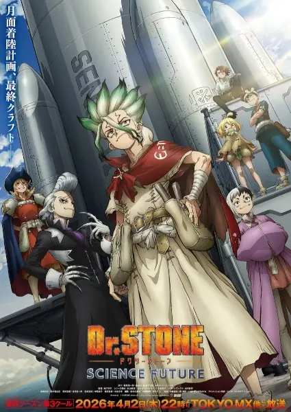

TV · 2026
Доктор Стоун: Научное будущее. Часть 3
Dr. Stone: Science Future Part 3
★ 8.313 эп.Доктор Стоун
Подготовка к самому дерзкому проекту в истории человечества завершена: Царство науки начинает строительство ракеты для полета на Луну. Чтобы навсегда покончить с угрозой окаменения, Сэнку и его команда должны преодолеть земное притяжение и встретиться лицом к лицу с таинственным Вопрошателем. В этом решающем финале наука станет мостом между прошлым и будущим. Героям предстоит не просто раскрыть тайну катастрофы, но и заложить фундамент для новой эры, где знания станут общим достоянием всего мира. Путь к звездам открыт, и теперь судьба цивилизации зависит от одного точного расчета и непоколебимой веры в человеческий разум.
- Сёнен
- Приключения
- Комедия